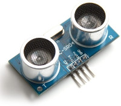

This sensor is designed to be mounted onto a tube set into the growbed and free of obstructions such as growing media. It needs to be mounted at least 20cm above the maximum water level to preserve it's lifespan. The sensor isn't waterproof and will eventually corrode and need replacing after a year or so.
Inside the case, the sensor is a HC-SR04 (datasheet), which uses ultrasonics to measure distance. It has four 0.1" header pins that are plugged into a socket.
The waterelf connector for this sensor is a six pin type SP-13, the extra two pins are used for controlling the growbed valves. The connectors have numbered pins on the plugs and sockets themselves. The diagram below is looking into the face of the sensor plug.
| Pin | Function | Cable colour |
|---|---|---|
| 1 | Power (5V) | Orange + Orange/White |
| 2 | Trigger | Green/White |
| 3 | Echo | Blue/White |
| 4 | Ground | Brown + Brown/White |
| 5 | Pump switched ground | Green |
| 6 | Pump power (3.3V) | Blue |